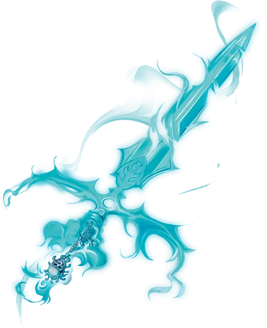

Отмычка воителя
Warrior’s Passkey
Чудесный предмет, редкий (требуется настройка)

Рекомендованная стоимость 501-5 000 зм
Этот серебряный ключ-отмычка теплый на ощупь. Удерживая его в форме ключа, вы можете действием наложить с его помощью заклинание открывание [knock].
Трансформация ключа. Держа ключ, вы можете бонусным действием превратить его в волшебный длинный меч. Считается, что вы владеете мечом, и у вас есть бонус +1 к броскам атаки и урона, совершённым с его помощью. При попадании меч наносит 1к10 урона силовым полем. Предмет остается в форме меча до тех пор, пока он не покинет ваши руки, или вы не воспользуетесь бонусным действием, чтобы вернуть ему форму ключа.
Если вы прекратите настройку на предмет, пока он находится в форме меча, он автоматически вернется в свою форму ключа.